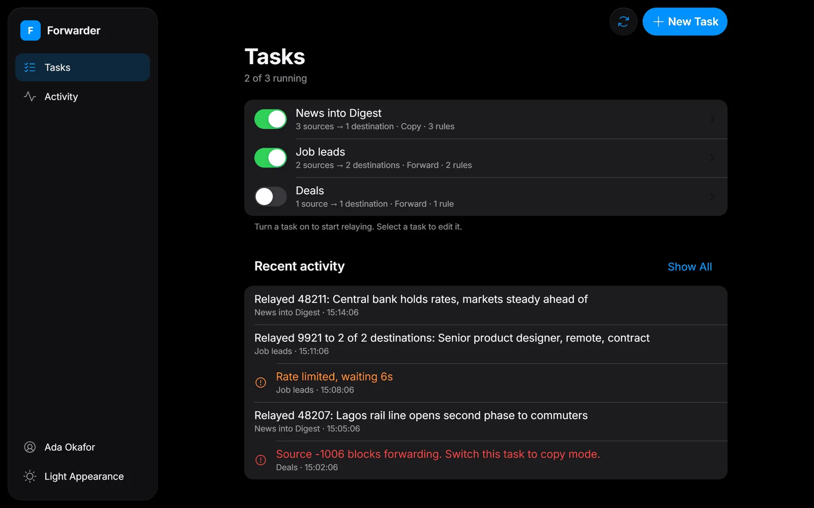
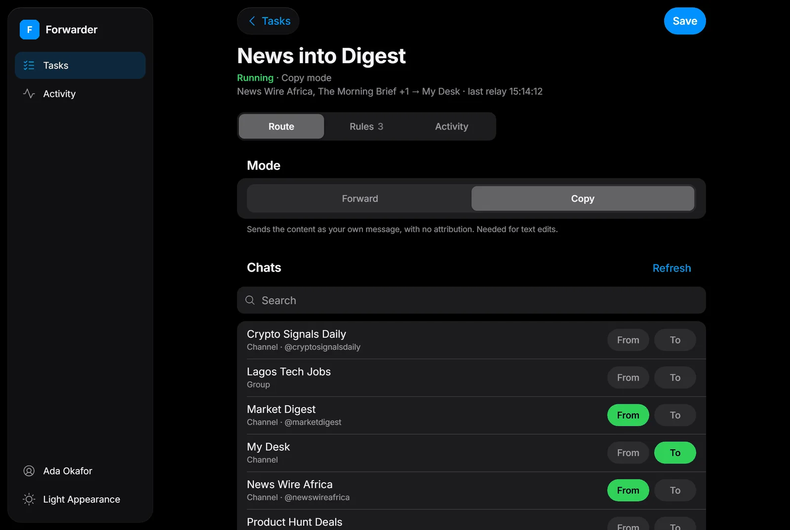
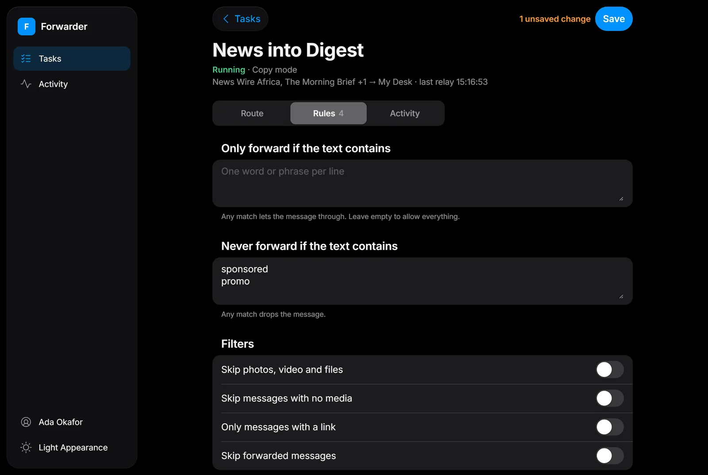
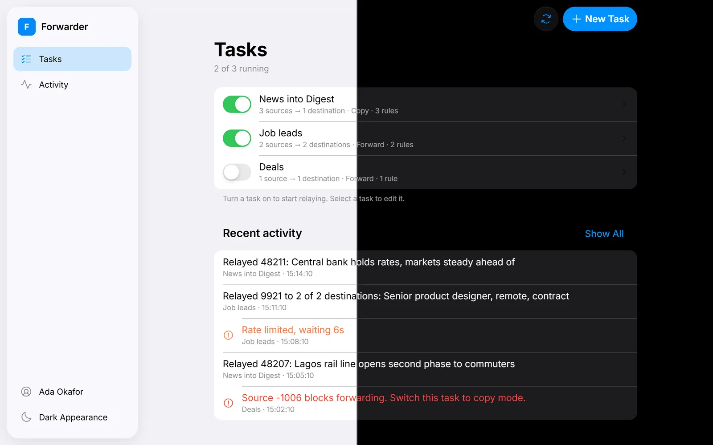
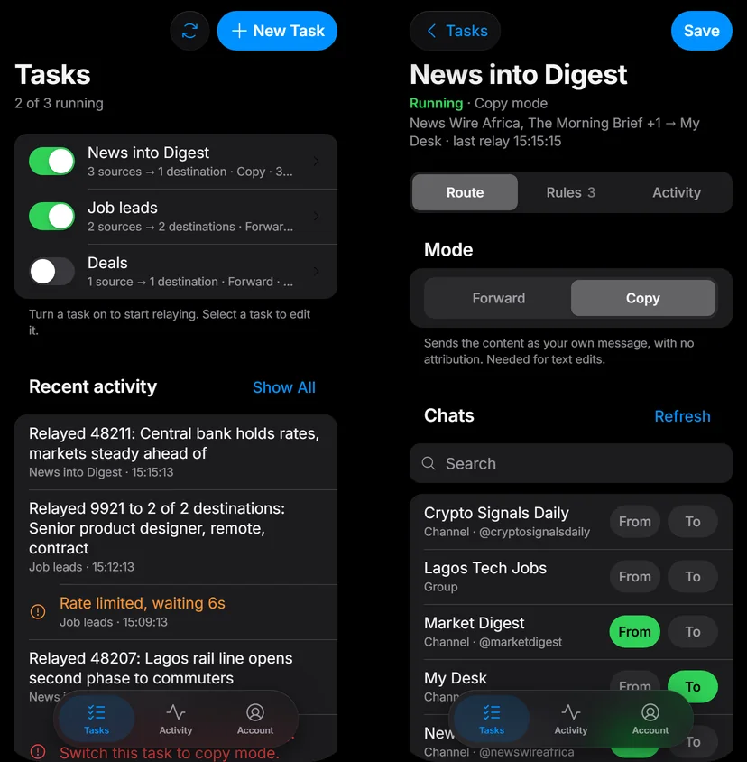

Pick the route
Mark any chat you're in as From or To. A task can have many of each.
Open source · MIT licence · Free
Forwarder copies new messages from any Telegram group or channel you're in to the chats you choose, filtered and cleaned on the way. It runs on your own machine.
Each task has a name, its source and destination chats, a mode and its own rules. Running tasks pick up again after a restart.

How it works
Forwarder connects as your own Telegram account, so it can read channels you only subscribe to. A bot can only see chats it has been added to.
Mark any chat you're in as From or To. A task can have many of each.
Forward keeps the "Forwarded from" header. Copy re-sends the message as your own, and allows text edits.
New messages relay as they arrive. The Activity screen shows every relay, warning and error.

The editor shows where messages come from, where they go, the mode and the time of the last relay. Search finds any chat you're in.
You can revoke the login at any time in Telegram under Settings → Devices.
Rules
find => replaceEdits need Copy mode. A task in Forward mode with edits set won't start, so nothing is silently skipped.

Safety
A task that sends into its own source, or closes a cycle with another running task, won't start.
At most one send every 0.25 seconds overall, and one every 1.5 seconds into any single chat, so a burst never trips Telegram's limits.
Recently relayed messages are remembered, so a restart or a busy channel never sends a duplicate.
Your login, tasks and history live in one folder on your machine, and messages go only between Telegram and you.
The interface follows Apple's design guidelines. It switches between light and dark with your system, and on a phone the sidebar becomes a floating tab bar.


Get started
You need Python 3, or Docker, and a Telegram account.
Sign in at my.telegram.org and open API development tools to get an api_id and api_hash.
git clone https://github.com/withZion/tg-forwarder
cd tg-forwarder
python -m venv .venv
.venv\Scripts\activate # macOS/Linux: source .venv/bin/activate
pip install -r requirements.txt
python main.pyOpen http://127.0.0.1:8000, enter your keys and phone number, then the code Telegram sends you. Choose New Task, pick your chats and turn it on.
Prefer a server? The repo includes a Dockerfile and a host check script. It needs an always-on machine, so shared website hosting won't keep it running.
Good to know